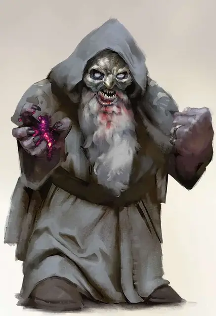

Дуэргар повелитель разума
Duergar Mind Master
Средний Гуманоид (Дварф), любое мировоззрение

Класс Доспеха 14 (кожаный доспех)
Хиты 39 (6к8 + 12)
Скорость 25 футов
| мод | спас | ||
|---|---|---|---|
| СИЛ | 11 | +0 | +0 |
| ЛОВ | 17 | +3 | +3 |
| ТЕЛ | 14 | +2 | +2 |
| мод | спас | ||
|---|---|---|---|
| ИНТ | 15 | +2 | +2 |
| МДР | 10 | +0 | +2 |
| ХАР | 12 | +1 | +1 |
Навыки Восприятие +2, Скрытность +5
Сопротивление урону яд
Чувства истинное зрение 30 футов, тёмное зрение 120 футов, пассивное Восприятие 12
Языки Дварфийский, Подземный
Опасность 2 (450 опыта)
Бонус мастерства +2
Среда обитания Горы, Подземье
Особенности
Дуэргарская устойчивость. Дуэргар совершает с преимуществом спасброски от заклинаний, а также спасброски против состояний очарован, парализован и отравлен.
Чувствительность к солнечному свету. Находясь на солнечном свету, дуэргар совершает с помехой броски атаки, а также проверки Мудрости (Восприятие), полагающиеся на зрение.
Действия
Мультиатака. Дуэргар совершает две атаки Отравляющим разум кинжалом. Он может заменить одну из атак Управлением разумом.
Отравляющий разум кинжал. Рукопашная атака оружием: +5 к попаданию, досягаемость 5 футов, одна цель. Попадание: 5 (1к4 + 3) колющего урона, плюс 10 (3к6) урона психической энергией, или 1 колющего урона и 10 (3к6) урона психической энергией, пока уменьшен.
Невидимость (перезарядка 4-6). Дуэргар магическим образом становится невидимым в течение 1 часа или пока он не атакует, наложит заклинание, использует своё «Уменьшение» или потеряет концентрацию (как если бы он концентрировался на заклинании). Любое снаряжение, одетое или носимое дуэргаром, становится невидимым вместе с ним.
Управление разумом. Дуэргар выбирает целью одно существо в пределах 60 футов от себя, которое он может видеть. Цель должна преуспеть в спасброске Интеллекта Сл 12, иначе он заставит её реакцией совершить одну атаку оружием по существу на выбор дуэргара, или же передвинуться на 10 футов по направлению, выбранному дуэргаром. Существа, имеющие иммунитет к состоянию Очарован, также невосприимчивы к действию Управления разумом.
Бонусные действия
Уменьшение (перезарядка после короткого или продолжительного отдыха). На 1 минуту дуэргар магическим образом уменьшается в размере вместе со всем, что несёт и носит. В уменьшенном состоянии Крошечного размера; урон его оружием становится равен 1; и он совершает атаки, проверки характеристик и спасброски с Помехой, основанные на Силе. В то же время уменьшение в размерах даёт ему бонус +5 к проверкам Ловкости (Скрытность) и бонус +5 КД. Помимо прочего дуэргар может бонусным действием на каждом своём ходу использовать действие Засада.
Описание
“Архитектура дуэргаров примечательна своим брутальным величием. Это не тот стиль, который я бы использовал для своих башен — я предпочитаю золото, драгоценные камни и узоры, — но я восхищаюсь смелостью дварфийской каменной кладки”.
— Морденкайнен
“Ментальная сила, которой обладают дуэргары, была дана им иллитидами. Но зачем иллитидам создавать слуг, которые могли становиться невидимыми или вырастать до размеров огра?
Скорее всего, потому, что эти слуги преуспели бы в том, чтобы пасти других приспешников своих хозяев. Оглядываясь назад, кажется очевидным, что дуэргары избежали рабства, потому что их тюремщики дали им ключи.”
— Морденкайнен
Дуэргары - дварфы из глубин Подземья и других бессолнечных царств. На их личности и способности оказали глубокое влияние пленение и мучения их предков пожирателями разума; они были наделены мощными псионическими способностями, но также и глубоким мраком. У некоторых это напряжение печали вдохновляет на произведения величественной, но меланхоличной красоты, в то время как у других оно проявляется как ярость.
Как и многие, кто живет в Подземье, дуэргары должны постоянно быть начеку от набегов и заговоров своих соседей. С этой целью воины-дуэргары выполняют различные боевые роли, часто сочетая свою ярость в бою со своими псионическими способностями или дрессируя опасных существ Подземья в качестве верховых животных.
Некоторые считают дуэргаров безрадостными, но на самом деле они глубоко увлечены всем, что делают, даже если эта страсть редко проявляется как веселье. Они привносят эмоциональный накал в свою жизнь, независимо от того, исследуют ли они соседние туннели, защищают свои дома, общаются со своими семьями или создают новые смелые работы. Узы дружбы и родства прочны, хотя справиться с неизбежными вспышками разочарования и отчаяния не всегда легко. Точно так же дуэргары, как правило, очень ориентированы на сообщество - в Подземье все должны сотрудничать, чтобы выжить.
Среди дуэргаров Забытых Королевств творение - это безумно страстный процесс. Они, как правило, отдают предпочтение работам, которые являются прочными и величественными, но в своей основе, отдающая предпочтение геометрическим формам. Крепости, которые они проектируют, массивны и суровы, а оружие, которое они создают, явно является орудием насилия. В то время как другие могут осуждать свои творения как холодные и лишенные украшений до аскетизма, дуэргар видит в них уважение к используемым материалам и честность в отношении их назначения.
Дуэргар повелитель разума
Надев устрашающие маски, повелители разума дуэргаров обычно действуют как шпионы, как внутри крепости дуэргаров, так и за ее пределами. Их псионически усиленные способности позволяют им с легкостью видеть сквозь иллюзии и уменьшаться до Крошечных размеров, чтобы шпионить за своими целями.